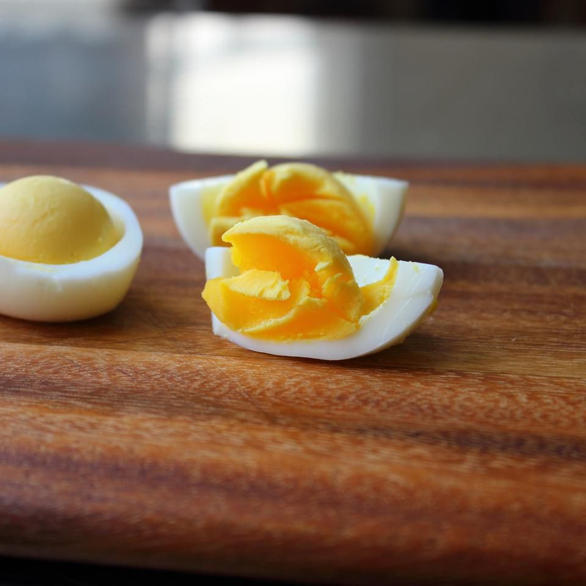

Soft Hard-Boiled eggs

Ingredients:
- 1 ¼ cups water
- 6 large cold eggs
Steps:
- Step 1: Place water into a 3-quart saucepan with a lid. Place over high heat and bring to a low boil.
Carefully place eggs in the water. Cover pan immediately, reduce heat to medium-high, and cook for 9 1/2 minutes.
- Step 2> Remove pan from heat and cool eggs down with cold running water, tipping out the water,
and continuing to run cold water over the eggs until they are cool.